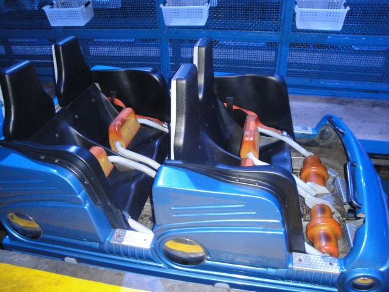
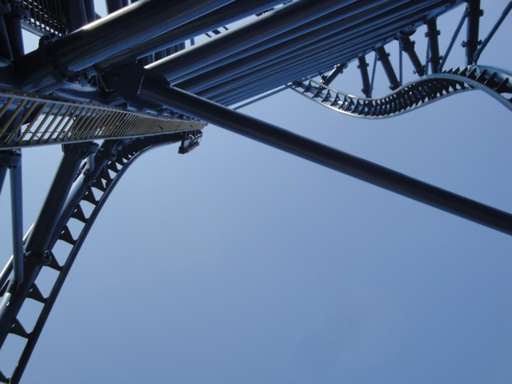
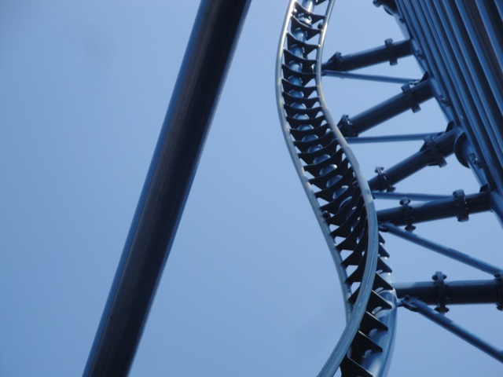

| |
Mr. Freeze Review

Today at Six Flags St. Louis, we're going to review Mr. Freeze, the parks shuttle coaster. Now before we even start talking about how Mr. Freeze as a ride itself is, there are three things about that this ride that totally kick ass and must be adressed right now. First of all, Mr. Freeze is a shuttle coaster that does something most enthusiasts would say is physically impossible. It runs two trains. So how does Mr. Freeze do it without crashing? It has a duel station. It's so obvious, and yet so genius. It makes every other shuttle coaster seem to have crappy operations when we'd usually shrug it off and say "It has to have one train operations." BULLSH*T!!!!!! Item #2, Mr. Freeze now runs backwards, however, I last rode it when it was still running forewards. So this review is of Mr. Freeze forewords. But don't worry. I rode it backwards at Six Flags Over Texas. Anyways, we get in the cars, pull down the lap bar and buckle the seatbelt. Oh yeah. Item #3 I must mention. This ride has lap bars. It goes upsidedown and has lap bars. So all that OTSRs are needed to go upsidedown whining is total sh*t!!! Oh, and the "loops can be done with OTSRs, but not complex inversions" is also been debunked as Mr. Freeze has an inverted top hat. In fact, all Premeier coasters have lap bars. Anyways, we then head over to the launch track. We sit, we wait, and, then we hear a horn blast. And just like that, we launch. The launch on Mr. Freeze is actually pretty damn strong. True, it's no Xcelerator, but this launch still kicks ass!! We then rip into broad daylight and rise up into the inverted top hat. It's kind of like on Xcelerator, except instead of getting a pop of airtime, we get a freaky sensation of hangtime. It's almost like upsidedown airtime. But whatever you want to call it, it simply proves that we need more inverted top hats. We then fall down from the inverted top hat and soar into the overbanked turn. Again, it's just like Xcelerator. Launch, Top Hat, Overbank, My God. These two rides have way more in common than I originally thought. Like on Xcelerator, the overbank is just fun, but no matter. We then rise up into the sky, rising up a vertical peice of straight track. Now here's a real treat for us. This vertical spike actually has a mini launch to push us all the way up to the top. That's just freaking awesome. And yep, now we fall back down and do everything backwards. The overbanked backwards is a little disorienting, but nothing to crazy. But then comes the inverted top hat. Backwards, it's simply phenomenal. Seriously, why don't any of the Intamin Rocket Coasters have Inverted Top Hats instead of normal Top Hats, and after that epicness, our ride was over, and man did it kick ass. This ride is totally awesome. Definetly check it out when at Six Flags St. Louis, even if you've been on the SFOT version.
8/10
Location: Six Flags St. Louis
Opened: 1998
Built by: Premier
Last Ridden: August 10, 2010
I have ridden this exact same ride at the following parks.
Six Flags Over Texas
Mr. Freeze Photos







|